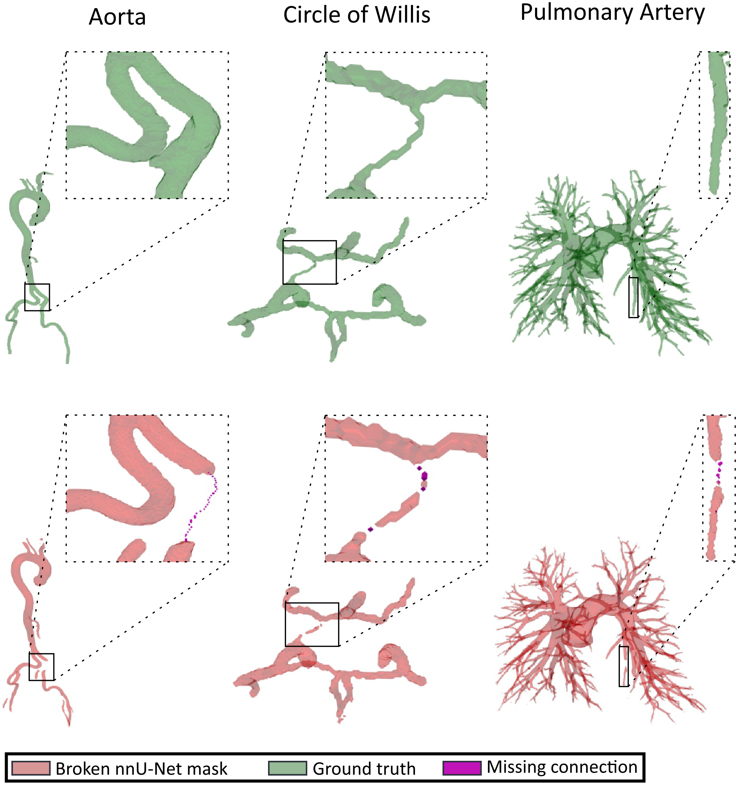
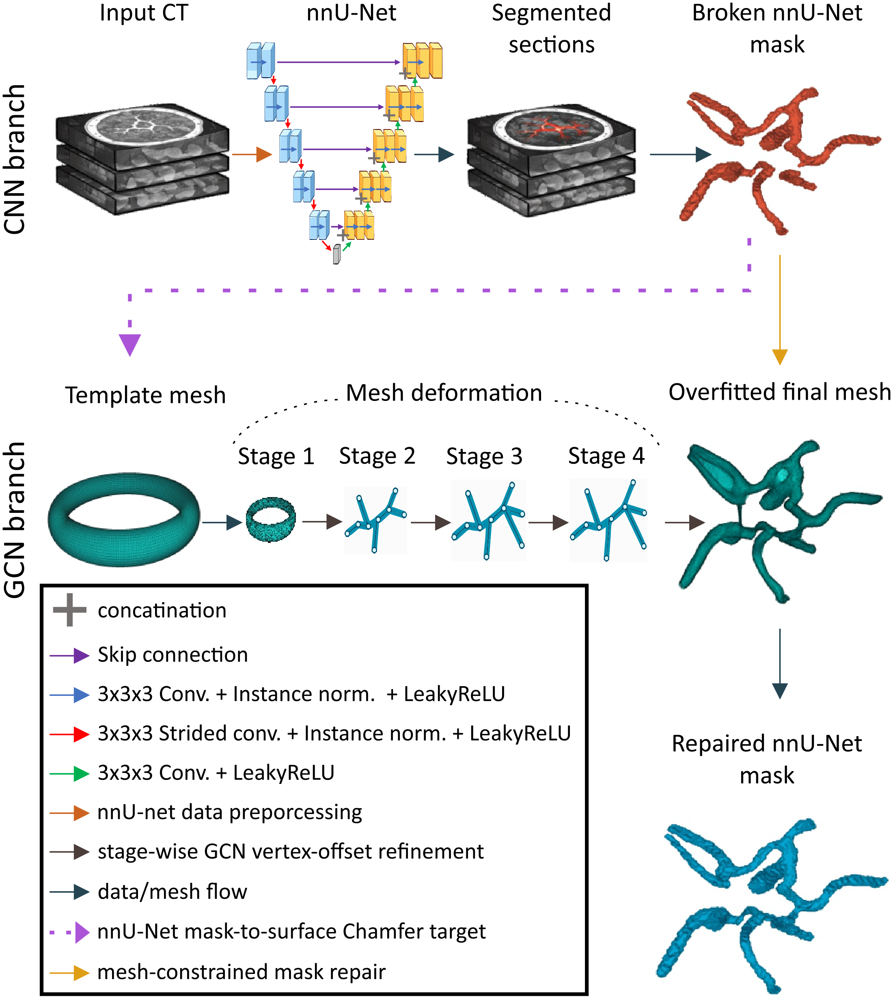
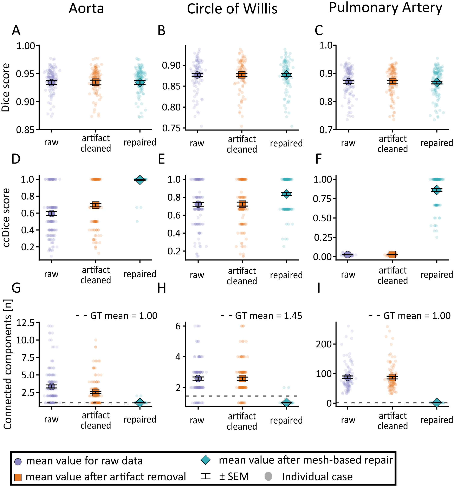
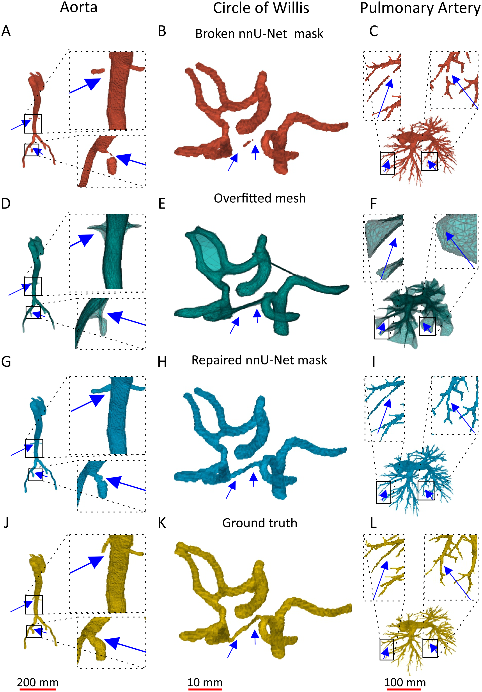
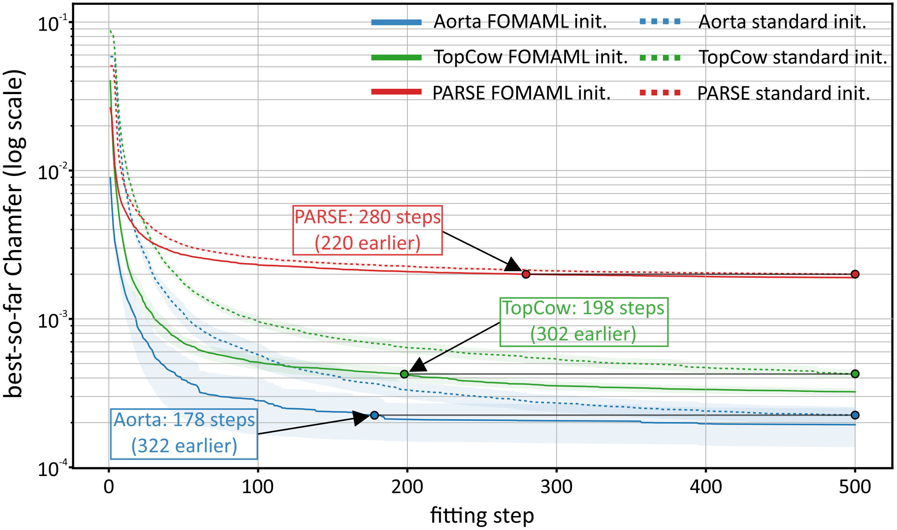

Mind the Gap: Mesh-Guided Repair of Broken Vessels Connectivity is restored while voxel accuracy is untouched
1 Sano Centre for Computational Personalised Medicine, Krakow, Poland 2 AGH University of Krakow, Poland
ShapeMI 2026 · Shape in Medical Imaging workshop at MICCAI 2026 · Strasbourg, 27 September 2026

Across three vascular anatomies, Dice changes by at most 0.003 while connected-component Dice and the number of components move to near their ideal values. The fitted mesh is never voxelised as the output; it only proposes and validates thin bridges between disconnected components.
Abstract
Vessel segmentation is commonly optimized as voxel-wise classification, but small local errors can strongly disrupt vascular connectivity while having little effect on overlap scores. This is particularly problematic for downstream analyses that rely on centerlines, branches, connected components, or graph structure. We propose a mesh-guided post-processing framework for repairing broken vessel segmentations produced by nnU-Net. For each predicted binary mask, a deformable template mesh is fitted to the mask surface in physical space and used as a case-specific geometric scaffold. The fitted mesh is not voxelized as the final segmentation; instead, it guides conservative reconnection of disconnected components by proposing or validating thin bridge candidates under foreground-growth constraints. We evaluated this approach in three vascular anatomies using AortaSeg24 and SEGA for the aorta, TopCoW for the Circle of Willis, and PARSE for the pulmonary arteries. Performance is measured using Dice, connected-component Dice (ccDice), and the Betti-0 number. Across these datasets, repair substantially improved connectivity while preserving overlap: Dice remained nearly unchanged, whereas ccDice increased from 0.596 to 0.992 for aorta, from 0.722 to 0.835 for TopCoW, and from 0.028 to 0.862 for PARSE. The FOMAML meta-initialization further accelerated the fitting per case, supporting practical mesh-based repair of the vascular topology. These results suggest that explicit mesh representations can provide a useful geometric prior for correcting topological failures in otherwise accurate voxel segmentations.
Method

1. Per-case mesh fitting. The mask surface is extracted with marching cubes and mapped to physical coordinates, so spacing, origin and direction are preserved. An anatomy-specific template (cylinder for the aorta, torus-like for the Circle of Willis, sphere for the pulmonary arteries) is deformed by a four-stage graph decoder whose parameters are optimised for that one case under a Chamfer loss with edge-length, Laplacian, normal-consistency and face-area regularisation. The mesh with the best Chamfer score is kept.
2. Conservative repair. Two strategies produce candidate bridges: mesh-graph path repair anchors disconnected components to nearby mesh vertices and takes the shortest path on the mesh graph; endpoint repair with mesh validation proposes short local bridges between component boundaries and keeps only those supported by nearby mesh vertices or face centroids. Every candidate is rasterised as a thin tube and accepted only if it merges the components while staying below a per-bridge foreground-growth limit.
3. Filtering and cleanup. Optional component-distance filtering removes far false-positive islands before fitting, and a mesh-supported cleanup removes small components left unsupported by the fitted mesh after repair.
4. FOMAML meta-initialisation. Each training case is a fitting task: the mesh model adapts to support surface points for a few inner steps and the shared initialisation is updated from the query loss. At inference the learned initialisation is a warm start, so a case converges in a few hundred instead of several thousand steps. In the aortic setting, FOMAML-initialised fitting plus repair takes about 30 s per case, against 44 s for the nnU-Net inference it post-processes.
Results
| Dataset | Mask | Dice ↑ | ccDice ↑ | β0 ↓ | False branch ↓ |
|---|---|---|---|---|---|
| Aorta (n = 145) | Raw nnU-Net | 0.934 ± 0.007 | 0.596 ± 0.045 | 3.35 ± 0.43 | 0.056 ± 0.009 |
| Filtered | 0.935 ± 0.007 | 0.695 ± 0.043 | 2.47 ± 0.30 | 0.044 ± 0.008 | |
| Repaired | 0.934 ± 0.007 | 0.992 ± 0.009 | 1.01 ± 0.02 | 0.055 ± 0.009 | |
| TopCoW (n = 125) | Raw nnU-Net | 0.870 ± 0.010 | 0.722 ± 0.043 | 2.58 ± 0.20 | 0.040 ± 0.006 |
| Filtered | 0.870 ± 0.010 | 0.723 ± 0.043 | 2.58 ± 0.20 | 0.040 ± 0.006 | |
| Repaired | 0.867 ± 0.010 | 0.835 ± 0.034 | 1.02 ± 0.02 | 0.063 ± 0.007 | |
| PARSE (n = 100) | Raw nnU-Net | 0.877 ± 0.007 | 0.028 ± 0.002 | 87.46 ± 9.00 | 0.130 ± 0.020 |
| Filtered | 0.877 ± 0.007 | 0.028 ± 0.002 | 86.56 ± 8.97 | 0.129 ± 0.020 | |
| Repaired | 0.876 ± 0.007 | 0.862 ± 0.041 | 1.56 ± 0.21 | 0.132 ± 0.020 |
Mean ± 95% confidence interval, five-fold out-of-fold protocol: every repaired case was segmented by an nnU-Net model that never saw it in training. β0 is the number of connected components (ideal: 1 for the aorta and pulmonary tree; TopCoW ground truth averages 1.45 because some Circle of Willis variants are anatomically incomplete).



Limitations and outlook
- A false-positive component that survives filtering can support an anatomically implausible bridge; on TopCoW the false-branch fraction rose from 0.040 to 0.063.
- The repair stage uses hard binary masks only. Image intensities or nnU-Net probability maps are not yet used to validate bridges.
- Templates and repair thresholds are dataset-specific and may need tuning for new vascular territories.
- Next steps: learned bridge scoring, anatomical constraints for highly variable structures, and hemodynamic experiments quantifying the downstream effect of small topological corrections.
Citation
@inproceedings{drwiega2026mindthegap,
title = {Mind the Gap: Mesh-Guided Repair of Broken Vessels},
author = {Drwiega, Gniewosz and Szymanski, Wojciech and Wodzinski, Marek},
booktitle = {Shape in Medical Imaging (ShapeMI 2026), MICCAI 2026 Workshop},
year = {2026}
}